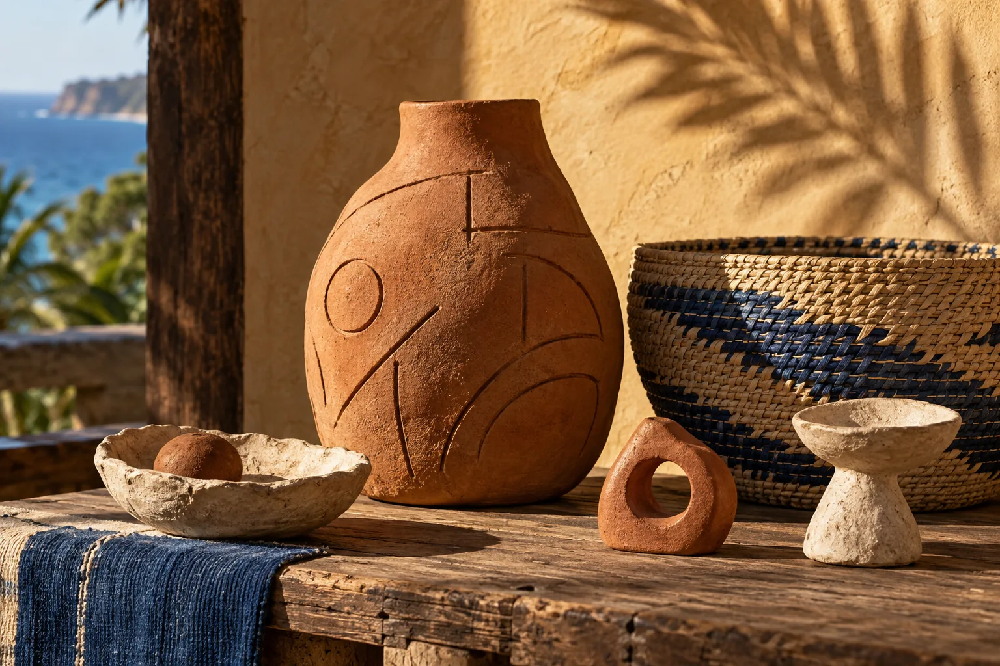
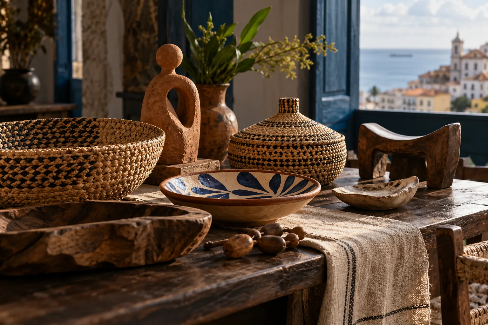
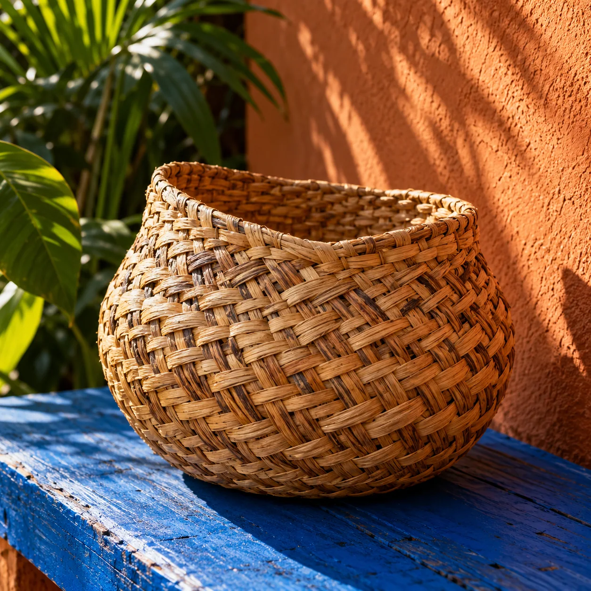
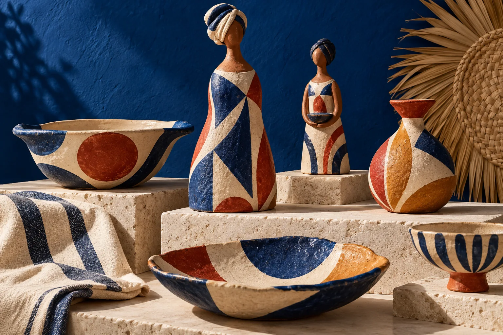

IMAGEM CONCEITUALFormas que guardam matéria
Objetos em cerâmica e barro. Consulte modelos e disponibilidade atual.
Perguntar sobre esta matériaCURADORIA DE ARTESANATO BAIANO E NORDESTINO
Objetos feitos por mãos da Bahia e do Nordeste. Uma curadoria para levar um pedaço de história, textura e território para perto.
Desde 2017, valorizando quem faz.

UMA CURADORIA COM TERRITÓRIO
A Tauá nasceu do encontro entre arquitetura, matéria natural e o fazer artesanal. A curadoria reúne trabalhos de artesãs e artesãos baianos e nordestinos, aproximando histórias locais de quem escolhe uma peça para casa ou para presentear.
Conheça o trabalho de pertoUM OLHAR SOBRE A MATÉRIA
Cada trabalho tem o gesto de quem o fez. Explore por material e consulte a loja sobre disponibilidade, detalhes e formas de compra.

IMAGEM CONCEITUALObjetos em cerâmica e barro. Consulte modelos e disponibilidade atual.
Perguntar sobre esta matéria
IMAGEM CONCEITUALTrabalhos em palha e fibras naturais. Consulte as peças disponíveis.
Perguntar sobre esta matéria
IMAGEM CONCEITUALPeças cerâmicas de caráter autoral. Modelos e disponibilidade variam.
Perguntar sobre esta matériaObjetos de madeira e outras matérias naturais presentes na curadoria.
Perguntar sobre esta matériaOs exemplos e as imagens são conceituais; não representam produtos ou estoque atual da Tauá.
QUEM FAZ TAMBÉM FAZ PARTE
Desde 2017, a Tauá realiza uma curadoria regional de trabalhos produzidos por mãos baianas e nordestinas. Dar espaço a essas peças também é manter vivas as histórias e a economia de quem cria.
Acompanhar a curadoria Texto de conceito baseado nas informações públicas da Tauá.ENCONTRE A TAUÁ
Conheça a curadoria no Rio Vermelho e veja as peças de perto. Consulte o horário antes de ir.
Rua Fonte do Boi, 176UM PEDAÇO DA BAHIA, POR PERTO
Fale com a Tauá para saber o que está disponível, conhecer as histórias por trás das peças e combinar sua compra.
Conversar com a Tauá